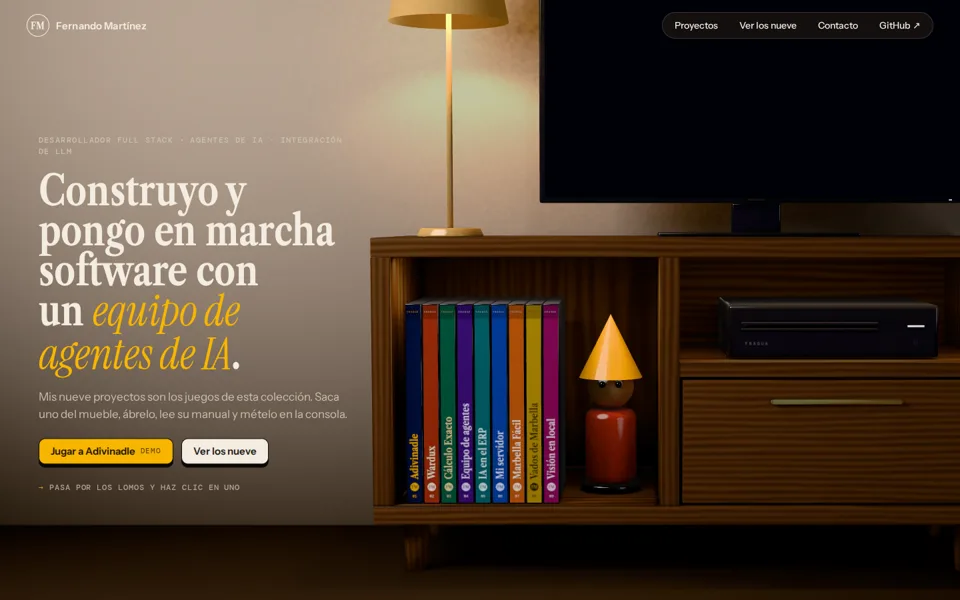
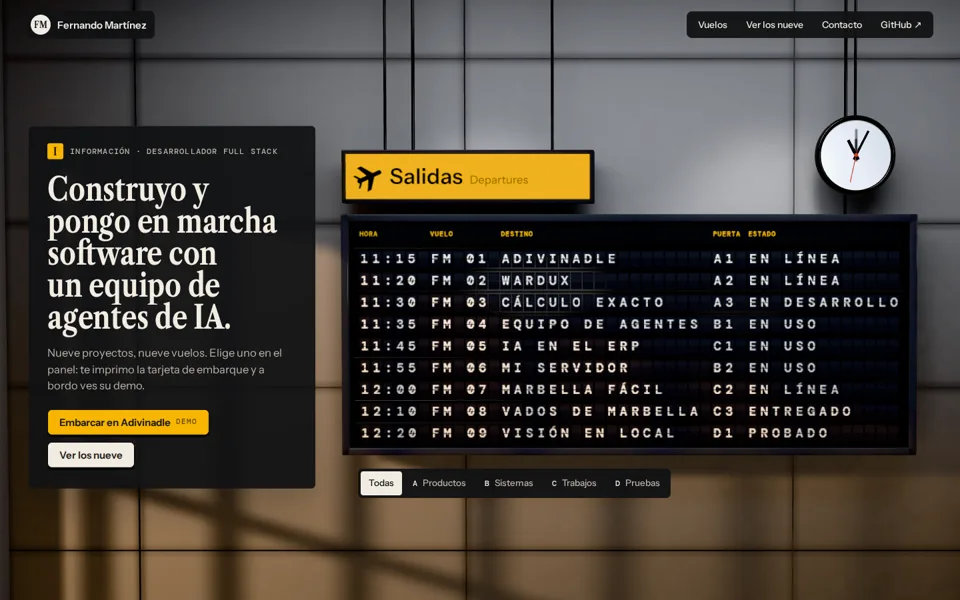
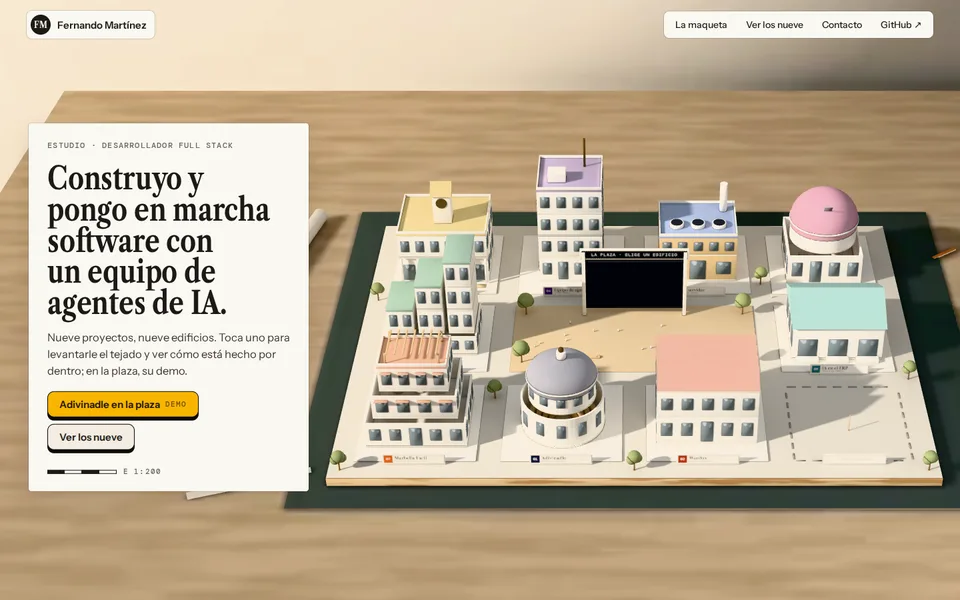
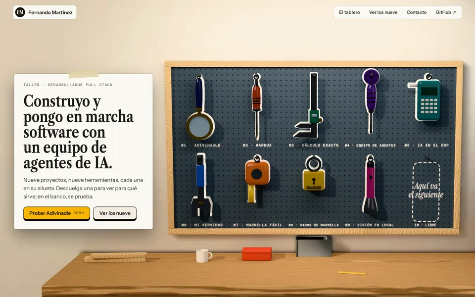
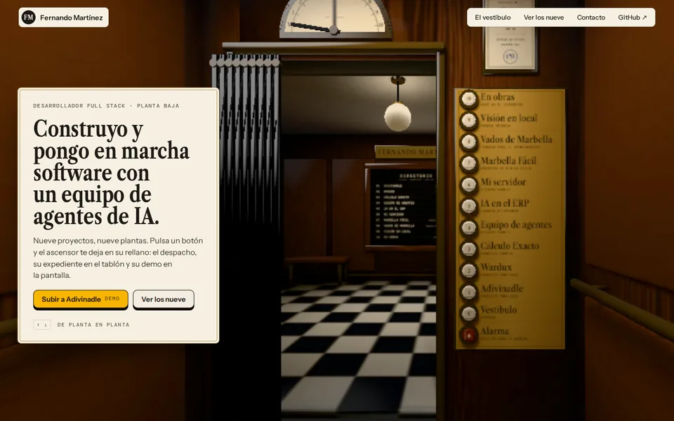

Portfolio · ideas de portada
Escenas montadas en Blender, con la luz horneada, y llevadas a la web con three.js. Cada una cuenta los nueve proyectos con su propia metáfora.

La estanteríaLos nueve proyectos como juegos de una colección: sacas uno, lees su manual y lo metes en la consola.
El panel de salidasNueve vuelos en un panel de paletas: eliges uno, el quiosco te imprime la tarjeta de embarque y, al pasarla por el lector, su pantalla pone la demo.
La maqueta habitableNueve edificios de cartón alrededor de una plaza: levantas el tejado de uno para verlo planta a planta y en la plaza, su demo.
El tallerNueve herramientas colgadas en el tablero, cada una en su silueta: descuelgas una para ver para qué sirve y en el banco se prueba.
El ascensorUn ascensor antiguo de nogal y latón: la botonera es el índice, y en cada rellano, su expediente en el tablón y su demo en la pantalla.